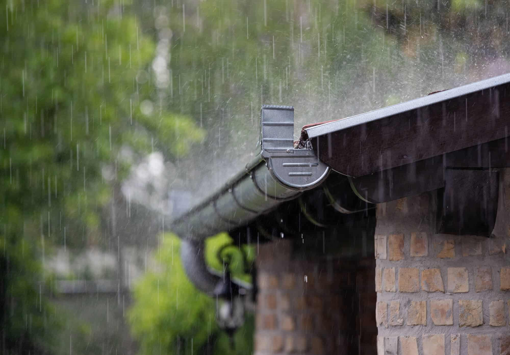
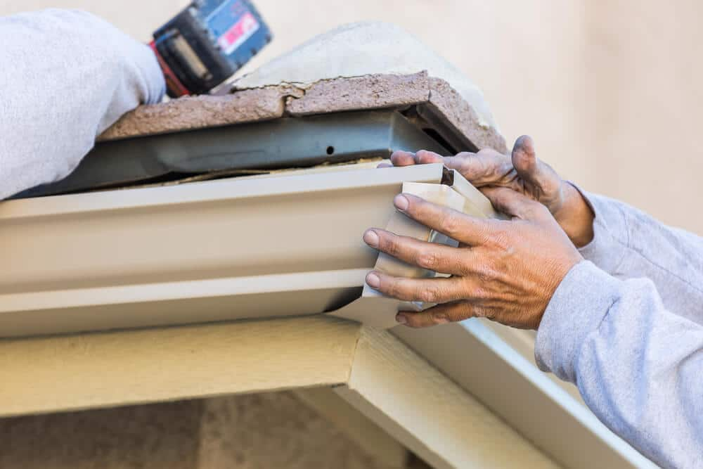
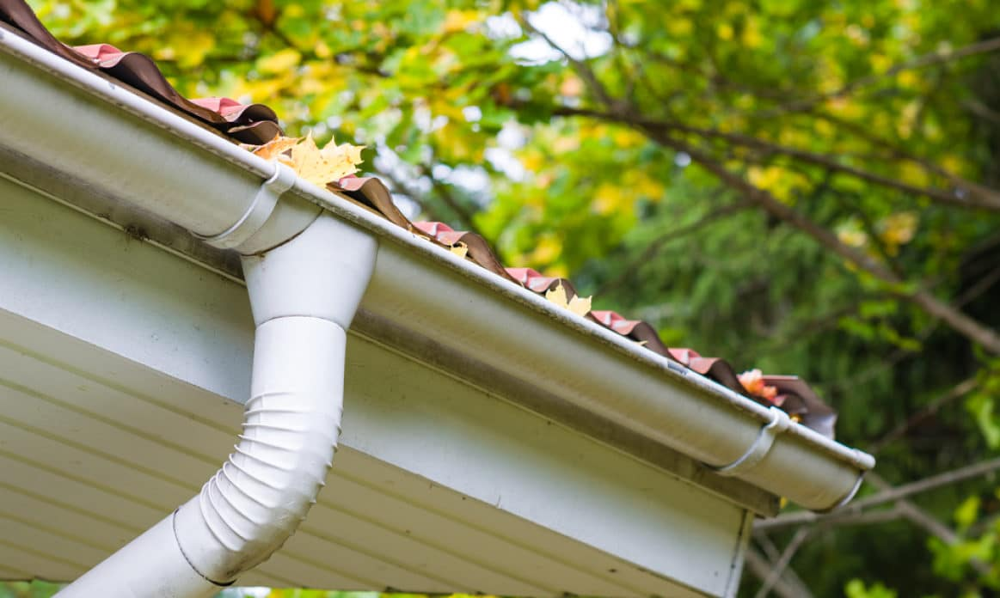
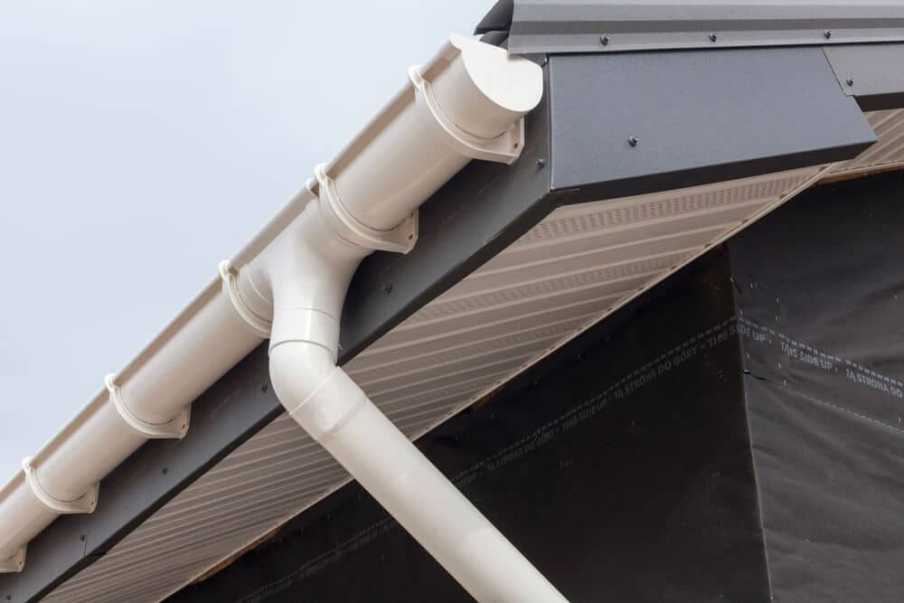

Slidell, LA Gutter Installation, Repair and Replacement
At Big Easy Gutters, we handle gutter installation, repair and replacement across Slidell, and every project opens with a free estimate and a close look at where your roof water ends up.
- Serving Slidell, LAHomes and businesses in Slidell
- Free estimatesFree estimates for every property
- Licensed and insuredLocally owned and operated
- Homes and businessesResidential and commercial
Gutters in Slidell
Can you install new gutters on my Slidell home?
Yes. Slidell is one of our service areas, and we put in new gutter systems, fix damaged ones and replace worn-out runs for homes and businesses. Your project begins with a free estimate, so the system is planned around the way your roof sheds water in a city that sees plenty of it.
Thinking about gutters for your Slidell property? Call us or contact us to set up a free estimate.

Why it matters here
Why do Slidell gutters work harder than most?
Slidell sits on the northeast shore of Lake Pontchartrain, about 3 miles north of the lake, on land only about 13 feet above sea level, and Current Results lists 66.2 inches of precipitation a year there, a little more than the 63.4 inches it lists for New Orleans.
Northeast shore, 3 miles from the lake
Wikipedia places Slidell in southeastern St. Tammany Parish, on the northeast shore of Lake Pontchartrain and about 3 miles north of the lake. With little elevation to spare, roof water that lands beside the house has few places to go, so downspouts should carry it out to the yard.
A humid subtropical climate
Wikipedia describes short, generally mild winters and hot, humid summers. That means gutters see steady use across the whole year and not only in one season.
Precipitation on about 117 days a year
Current Results lists Slidell at 66.2 inches of precipitation a year, falling on about 117 days. Frequent wet weather is why clear gutters and downspouts matter on every roofline here.
Sources: Slidell, Louisiana (Wikipedia) for location, elevation and climate; Current Results for the Slidell precipitation average.
What we do
What gutter work do we take on in Slidell?
Slidell customers can book new installations, repairs for leaking or drooping runs, full replacements and custom designs. Every service begins with a free estimate and an assessment, so you hear what your roofline actually needs before any decision is made.

Gutter Installation in Slidell
Brand-new systems designed for your roofline, with the material, style and color of your choice.
View service
Gutter Repair in Slidell
Fixes for leaks, cracks, holes and runs that have pulled loose or sagged.
View service
Gutter Replacement in Slidell
Worn or damaged gutters taken out and swapped for a fresh, customized system.
View serviceCustom Gutters in Slidell
Gutters made to suit the dimensions and look of your particular house.
View serviceSlidell by the numbers
What do Slidell's numbers say about gutters?
The numbers say Slidell is a wet, low-lying place. The city sits at about 13 feet of elevation, collects 66.2 inches of precipitation in a typical year and sees rain on roughly 117 days, which is why a working gutter system is a basic part of the house here.
Gutters can only manage what comes off the roof, so we look at where each downspout will send it.
Sources: Current Results (Slidell station) and Slidell, Louisiana (Wikipedia) for elevation and distance from the lake.
- About 66.2 inches of precipitation in an average Slidell year
- Precipitation on about 117 days a year
- Elevation of about 13 feet above sea level
- About 3 miles north of Lake Pontchartrain
Gutter styles
Which gutter style suits a Slidell house?
Four styles are available in Slidell: K-style, half-round, box and fascia. The right one depends on your roof edge, the look you want and how much water the roof sheds, and we go through the choices with you during your free estimate.
| Style | Shape | Where it fits |
|---|---|---|
| K-style | Flat back, decorative front shaped like the letter K | Homes that want a decorative front and a flat back against the fascia |
| Half-round | A smooth half circle | Historic and traditional homes |
| Box style | Square or rectangular channel | Buildings that value a clean look and a roomier channel |
| Fascia | Built to blend with the fascia board | Roof edges that call for a clean, seamless line |
Treat this as a starting point. The final style call happens when we meet at your free estimate.
Ready for gutters built for Slidell rain?
We are Big Easy Gutters, a locally owned and operated company with the licensing and insurance to work on Slidell homes and businesses.
Tap the button for a free estimate, or call 504-688-3797 and tell us about your property.
FAQ
What do Slidell homeowners ask about gutters?
Still have a question? Call 504-688-3797 or contact us for a free estimate.
Do you install gutters in Slidell, LA?
Yes. Slidell houses and commercial buildings are both part of our work, along with repair jobs and complete replacements. The first step is a free estimate with an assessment of your property, which lets us plan the material, style and downspouts before any work is scheduled.
Is Slidell rainier than New Orleans?
By the Current Results figures, yes, a little. Slidell averages 66.2 inches of precipitation yearly over about 117 days, while New Orleans averages 63.4 inches over about 115 days. Either way, wet weather is frequent, so working gutters matter in both cities.
Does being 3 miles from Lake Pontchartrain change anything for Slidell gutters?
Slidell is about 3 miles north of the lake, on land around 13 feet above sea level. That is not much height, so roof water has few places to go. Gutters and downspouts give it a route out to the yard instead of letting it collect beside the walls.
Which gutter style is right for my Slidell house?
Half-round has a classic look often chosen for traditional or historic homes, K-style has a flat back and decorative front, fascia blends with the fascia board for a sleek line, and box style handles a lot of water. We compare them at your free estimate.
Do you work on commercial buildings in Slidell?
Yes. We take on Slidell offices, shops and other commercial buildings as well as houses, and the process is the same from the free estimate onward. Long roof edges collect a lot of water, so downspout placement gets careful thought.
Which cities near Slidell do you serve?
Our service area reaches well past Slidell. Along the Northshore we also work in Mandeville, Covington and Madisonville, with Hammond a little farther inland, plus Kenner, Gretna, St Rose, LaPlace, Baton Rouge and New Orleans. Each area gets the same free estimate from the same licensed, insured, locally owned team.
What Our Clients Say
I had the gutters on my house replaced and I couldn’t be more pleased. From start to finish, they were fast, professional & did an awesome job! So glad we found y’all.
Big Easy Gutters really know their stuff and made sure that the gutters on my house were done correctly. The finished product looks great, too! I already recommended them to a friend who was delighted with the work they did for him. They are the best!
Their work is fantastic, and they have proven themselves to be dependable time after time. I recommend them without hesitation if you’re looking for new gutters or just want your current ones cleaned up.